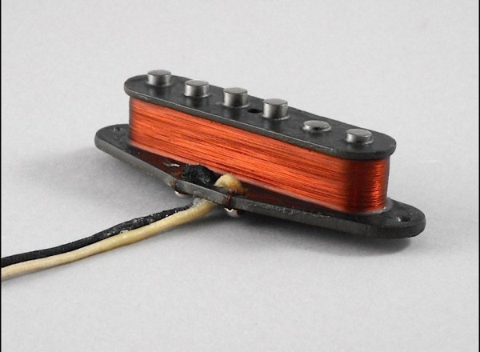
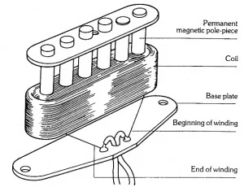

If an electric guitar is a painting, then its pickups are the paint. They are responsible for the existence of a guitar's sound characteristics while also determining the colour, depth and consistency of its audio signature. For tone-chasers, professional touring musicians, studio wizards and everything in between, having the right pickup models and arrangement is extremely important.
If you’ve ever played an electric guitar with the volume knob on its body turned all the way down, you’d know it has the same twangy, thin sound as if it were actually unplugged. By turning the dial to zero, you’ve disabled all the pickups in the guitar. Pickups are an important connective piece between the strumming of strings and the noise that actually comes out of an amp or headphones, so without them, nothing happens.
Fundamentally, electric guitars are a circuit. The player creates input by plucking or picking the strings, the sound is processed, and then we can hear the output through some sort of speaker. The obvious question mark here is that moving a piece of wire around doesn’t normally create voltage or current, two necessary parts of a circuit. That’s where pickups come in.

Guitar pickups utilize a physical electromagnetic rule called Faraday’s Law of Electromagnetic Induction, which states that “a changing magnetic field induces a voltage in a circuit”. This allows pickups, which are essentially magnets coiled with a copper wire, to generate a voltage. This principle is demonstrated in Figure 1, an official diagram of a Seymour-Duncan single coil pickup.
This pickup comprises a main "frame", called a bobbin (the bottom of which is labeled as “Base plate” in the diagram), six bar magnets, (usually neodymium or alnico) and copper wire coiled around the main body. When placed in a guitar, each magnet lies beneath one of the six strings - this allows each string to be “heard” with a good amount of detail.
When a string is played, its vibrations interfere with the pickup’s magnetic field as per Faraday’s Law of Electromagnetic Induction. This creates a voltage with AC (alternating current) inside of the copper coil which mimics the frequency of the string that’s played - it’s almost like the note is “heard” and “recorded” by the pickup in the form of an electrical signal, which is sent and further processed by amplifiers, pedals, and the like.
The sound profile of a pickup depends on a wide variety of factors - the polarity of the magnets, direction of the coil, and the materials of the components are all examples which have a noticeable impact on a pickup’s sound. However, for now we’ll just aim to understand their composition, not get picky over quality. Our priority is looking at the cheapest and most accessible options.
In that vein, single-coil pickups are by far the most common and basic option for a first pickup build. They’re kind of like the prototype for other types of pickups, like humbuckers or P-90s, and also have the least complicated makeup. However, as we will soon see, even the small details within the same "type" of pickup make a humongous difference. For instance, you can sample the difference between a more standard guitar single-coil and a bass single-coil from Stanford University's sound samples page by clicking the images below:
As the “framework” for the rest of the pickup, the bobbin is the first part of a pickup to make. There are a few ways to approach this.
The first option is simply buying a bobbin. Companies like SOLO Music Gear have single-coil bobbins of different dimensions for sale. It is important to ensure the bobbin dimensions (length, width, height, distance between strings, etc.) all match those of your guitar. These specs can usually be found online or, of course, can be manually measured.
As for building a bobbin, there are two main pieces of flatwork - the base plate and the top plate. The top plate is typically a more uniform oval shape, with the bottom plate usually taking on a more trapezoidal shape. The dimensions of the bobbin are very important, and can vary by guitar - but for the purpose of a standalone pickup, standard strat single-coil dimensions are appropriate. Refer to the diagram below from JJ’s Guitar Pickups for single-coil pickups:
Getting the dimensions right - namely the width and height of the inside of the bobbin, where wire is coiled - is extremely crucial to the sound of your pickup. A badly coiled wire can cause popping, hiccupping or otherwise unsavoury sound qualities to appear in your pickup, so naturally, ensuring that its frame is correctly shaped is important. Be very cautious when actually cutting the bobbin - ideally, route a CNC machine to cut the pickup at precisely the right dimensions. A die puncher can also create the holes where the magnets go.
It can be difficult to access this machinery for someone who doesn’t have experience workshopping and building parts - any kind of saw theoretically works fine, but making the bobbin could be the most difficult part of pickup construction for someone with no access to industry tools. Don’t be discouraged if it doesn’t turn out exactly like it looks in your guitar!
The materials for bobbins can vary from plastics such as phenolics and nylon to various types of wood. While the material of the bobbin doesn’t typically have a profound impact on the sound qualities of the pickup, it can certainly affect the make and durability of it.
| Material | Pros | Cons |
|---|---|---|
| Wood (pine, maple, etc.) |
|
|
| Phenolics |
|
|
| Nylon |
|
|
| Vulcanized fibre |
|
|
Nylon and vulcanized fibre are likely the best choices in terms of structural stability, durability and cost efficiency, but if you happen to have experience in wood and phenolics those are also great options. Note that this is just a few examples of many materials that can and have been used in the construction of guitar pickups - any easily cuttable, non-conductive plastic is likely a passable alternative.
Expect the bobbin to break during construction - it’s a natural part of learning to build and while discouraging, is important in its own right. Materials are generally cheap and making dimensional adjustments will largely be the most challenging roadblock you encounter.
Generally, types of alnico, ceramic, and neodymium magnets are the most common choices for single-coils. Alnico in particular is a widely used industry standard found in many high-end pickups of various styles. Within the “Alnico” label are various, more specific labels. Alnico V is largely regarded to be the most common material due to its versatile sound palette. It is a safe option to go with for your first pickup due to its great general use and adaptability. However, if you have better ideas about the specific sound you’re chasing, consult the summary table below:
| Material | Description |
|---|---|
| Alnico II | Laid-back, mellow - great for jazz music or other clean, smooth tones. |
| Alnico III | Clear, crisp - a very vivid sound that is good all-around. |
| Alnico IV | Immediate, wide - a brighter tone that takes up more space. |
| Alnico V | Confident, balanced - a standard and very dynamic. |
| Alnico VIII | Aggressive, sharp - high output and gain, great for metal but a bit niche. |
| Ceramic | Punchy, harsh - very pronounced, also often used in metal. |
| Neodymium | Defined, rich - can struggle with sustain but overall reliable. |
Largely speaking, rod magnets are inexpensive - certain materials can be hard to find, but common options like Alnico III or V can be found at local guitar shops. If you are planning on making and trying out several types of pickups, there is no harm in testing all kinds of magnets. Otherwise, Alnico II, III, and V are all reliable options that are most commonly chosen for amateur pickups.
One fascinating DIY method some workshoppers use is substituting the magnets for ferrous (iron-containing) screws. Obviously, the quality will be reduced - but depending on whether you have too many spare screws or simply prefer the aesthetics, this is another option.
The assembly of the parts is very straightforward. The magnets should act as connective pieces between the top plate and base plate, and should be tight enough that they don’t wiggle at all. Often the pickup will be potted in wax to fill in the micro-gaps to fill out both physically and in terms of its sound.
You can refer to this diagram by Haze Guitars for a visual on how the pieces go together. Note that this guide does not include a plastic cover and that is an optional piece for style or guitar fitting.
The top of the magnets should be level with the surface of each plate; there should be no protrusion. This is important so that the coiling of the copper wire can be done along a majority of the length of the magnet, which can have a significant impact on the sound.
It’s also important to consider the direction that each magnet is facing (north to strings or south to strings), but this is something that I’ll explore more in the Phase & Polarity section.
There are two main copper wire characteristics which will impact your tone - gauge and insulation.

The gauge of your copper wire affects how far the signal created by the magnets travels - if the strand of wire is too long or too short, the signal can be rendered completely useless. Because of this, professionals are picky about their gauge and generally only use wire within the range of 42-44AWG.
Knowing this, your gauge of choice should depend on the dimensions of your actual bobbin. If you have a bobbin with a thick top and base plate, choose a wire of higher gauge, and vice versa.
Another factor to consider is that a signal travels better through a wider wire. A 42-gauge wire is capable of carrying better quality sound than 44-gauge as it experiences less resistance and less information is lost. For that reason, lower-gauge is often preferred where possible, even at the expense of wire length - maybe you’ll want to make your bobbins thinner as a result.
The insulation coating of your wire is the other factor to consider when purchasing a copper wire. See below the most common types of insulation:
| Type of Insulation | Description |
|---|---|
| Plain enamel |
|
| Heavy formvar |
|
| Polynylon |
|
Insulation thickness is very significant in regards to two physical properties called inductance and capacitance. Inductance and capacitance are key components of any circuit, but they play key roles in the character and audibility of your pickup’s tone.
There is a negative correlation between insulation thickness and inductance/capacitance - the closer the copper in two strands of wires are to each other, the higher the inductance/capacitance values. This is generally undesirable as increasing these values usually reduces certain audio information, treble/midrange in particular - but remember that having thicker insulation will also reduce the length of wire you can fit onto your bobbin. It’s a good idea to weigh whether wire length or inductance/capacitance is more important to you to inform your choice of gauge and insulation.
Before putting together your pickup, phase and polarity are something you’ll want to think about. Due to the directional nature of magnetic fields, it’s important to configure your fields to enhance each other instead of cancelling out. What this means is that the magnet and coil direction have to align in a constructive way.
Of course, all magnets have a north and south pole, where the field is at its strongest. This is the basic mechanic behind how the direction of magnetic fields is determined (and thus how they can generate forces to attract or repel).
For an isolated pickup, it’s important that the direction of your magnets (whether north- or south-to-strings) is consistent. Which direction you choose doesn’t have any impact on the sound, but ensuring they’re all uniform does - having a mix will cause cancellations within the field. Use an extra magnet or a compass to decide which direction each magnet will face.
What’s just as important as guaranteeing an individual pickup is in phase is guaranteeing pickups are in proper phase with each other. When your pickups agree with each other, it encourages a much cleaner, crisper sound as more of your input signal is able to travel to your amp or headphones. Understand that the resulting magnetic fields from each pickup naturally also have a “direction” - conventionally, it’s referenced as either “clockwise” or “counter-clockwise” to the ground wire.
A fantastic visualization is presented in the above diagram by Lollar Guitars.
It’s classically understood that south-up/clockwise to ground and north-up/counterclockwise are positive phase and that north-up/clockwise to ground and south-up/counterclockwise to ground are negative phase. It checks out that switching both the facing of the magnets AND the coil direction results in the same direction of field. To better internalize this, you can consult with the table below:
| North-up/South-up | Orientation | Phase |
|---|---|---|
| North-up | Clockwise to ground | Negative |
| South-up | Clockwise to ground | Positive |
| North-up | Counterclockwise to ground | Positive |
| South-up | Counterclockwise to ground | Negative |
The two most common configurations are the standard in-phase orientation and the reverse wound/reverse polarity (RWRP) orientation. While these are both considered “in-phase”, RWRP is a more specific label for a configuration where the middle pickup has, as the name suggests, reverse winding and reverse polarity to the other two. So all three pickups will still have the same positivity/negativity, but the middle pickup will be reverse-coiled and flipped upside down.
What makes RWRP sound different from the standard in-phase configuration is the humbucking. Standard phase is usually considered a thicker, more robust option, but this brings about a background drone due to the more abundant harmonics and frequencies. RWRP is a bit thinner but cuts out more of that redundant noise due to interfering magnetic fields, leading to a cleaner tone with less buzz between notes.
A more niche third option is putting your pickups totally out of phase with each other. For the most part, this isn’t preferred due to the tinny, squawky sound that’s produced - but depending on exactly what sound you’re hunting, it can have its uses. For instance, Brian May’s Red Special famously has an out-of-phase option to lean into the “nasally” sound it’s known for.
There’s clearly lots to consider when putting together a single-coil pickup. It may seem like there’s not much to it - just a bobbin, magnet and wire - but the size of the parts, the direction they face, and much more also matter a ton. Yet, the most important part of the building process is a thing called trial and error. You’ll never get your pickup right the first time - as someone also undergoing the learning process (soon to come to this website!), I absolutely didn’t. So keep at it, don’t get discouraged, and have fun!